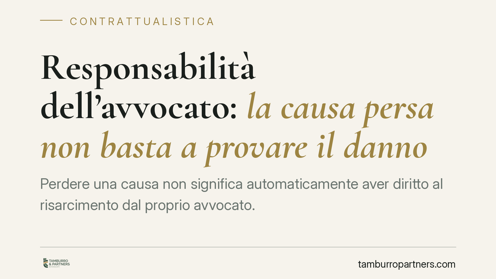

Responsabilità dell'avvocato: la causa persa non basta a provare il danno
Perdere una causa non significa automaticamente aver diritto al risarcimento dal proprio avvocato. La Corte di Cassazione ribadisce un principio consolidato: il cliente deve dimostrare, con un giudizio prognostico, che una difesa diversa avrebbe condotto alla vittoria. Senza questa prova, la responsabilità professionale non sussiste. Un chiarimento che pesa sia per i clienti sia per i professionisti.

Il principio affermato
La Corte di Cassazione, Sezione Terza Civile, è tornata su un tema ricorrente: quando l'avvocato risponde dell'esito negativo di una causa.
Il punto fermo è semplice ma spesso frainteso. L'esito sfavorevole del giudizio non prova, di per sé, la colpa del difensore. Chi lamenta un danno deve dimostrare qualcosa di più: che, in assenza dell'errore professionale, l'esito sarebbe stato favorevole.
Questa verifica si chiama giudizio prognostico. In pratica, il giudice è chiamato a ricostruire ipoteticamente cosa sarebbe accaduto se l'avvocato avesse agito correttamente. Solo se da questa ricostruzione emerge che la causa originaria aveva ragionevoli probabilità di essere vinta, il danno può dirsi provato.
Inquadramento normativo
Il fondamento è l'art. 2697 del Codice civile, che ripartisce l'onere della prova: chi fa valere un diritto in giudizio deve provare i fatti che ne costituiscono il fondamento. Nel nostro caso, è il cliente a dover dimostrare non solo l'errore, ma anche il nesso causale tra quell'errore e il pregiudizio subìto.
Rileva poi l'art. 2236 del Codice civile: quando la prestazione comporta la soluzione di problemi tecnici di speciale difficoltà, il professionista risponde solo in caso di dolo o colpa grave. È una soglia di tutela che riconosce l'alea connaturata all'attività forense.
Va ricordato che l'obbligazione dell'avvocato è tradizionalmente qualificata come obbligazione di mezzi: il professionista si impegna a una condotta diligente, non a garantire la vittoria. La giurisprudenza più recente, tuttavia, individua ambiti in cui emergono profili di risultato — si pensi alla redazione di un atto o a specifiche attività stragiudiziali, dove l'obiettivo è circoscritto e verificabile. La distinzione non è neutra: incide sul contenuto dell'obbligo e sulla misura della diligenza esigibile.
Quando il giudizio prognostico è più agevole
Non tutti gli errori hanno lo stesso peso probatorio. Vi sono casi in cui la ricostruzione ipotetica diventa più lineare.
Si pensi a errori oggettivi e documentabili: un termine di decadenza lasciato scadere, un'impugnazione proposta fuori tempo, una domanda semplicemente non formulata in giudizio. In queste ipotesi l'errore è evidente e la valutazione sulle probabilità di successo della causa originaria risulta meno incerta.
Resta però fermo il principio: anche davanti a un errore palese, occorre dimostrare che il diritto azionato era fondato. Un termine scaduto non basta se la domanda era comunque destinata al rigetto nel merito.
Implicazioni pratiche
Per il cliente, la conclusione è netta: l'insoddisfazione per l'esito non si traduce automaticamente in un diritto al risarcimento. Occorre un'analisi tecnica della causa originaria e delle sue reali chance.
Per l'avvocato, la pronuncia conferma un perimetro di responsabilità ancorato alla diligenza, non al successo. Ciò non attenua gli obblighi di informazione e di gestione accurata del mandato: la trasparenza sulle probabilità e sui rischi resta un dovere centrale.
Cosa fare in concreto
- Documentate per iscritto, in ogni fase, le scelte difensive e le informazioni ricevute dal cliente: la tracciabilità è decisiva in sede di eventuale contenzioso.
- Prima di avviare un'azione di responsabilità, è opportuna una verifica tecnica preventiva sulle reali probabilità di vittoria della causa originaria.
- Ricostruite il nesso causale in modo analitico: individuate l'errore specifico e dimostrate il collegamento con l'esito sfavorevole.
- Conservate gli atti del giudizio originario, indispensabili per impostare il giudizio prognostico.
- Distinguete tra condotta negligente e mero esito negativo: solo la prima può fondare una pretesa risarcitoria.
Una nota di cautela
I profili di responsabilità professionale variano sensibilmente in base al singolo caso: natura del mandato, tipologia di errore, fondatezza della pretesa originaria. Una valutazione generale non sostituisce l'esame del fascicolo concreto.
---
*Contributo informativo a cura di Tamburro & Partners - Avv. Giuseppe Tamburro. Non costituisce parere legale.*
Ogni contratto ha il suo equilibrio.
Se vuoi una revisione delle clausole o una redazione su misura, scrivi allo studio. Ti rispondiamo entro un giorno lavorativo.